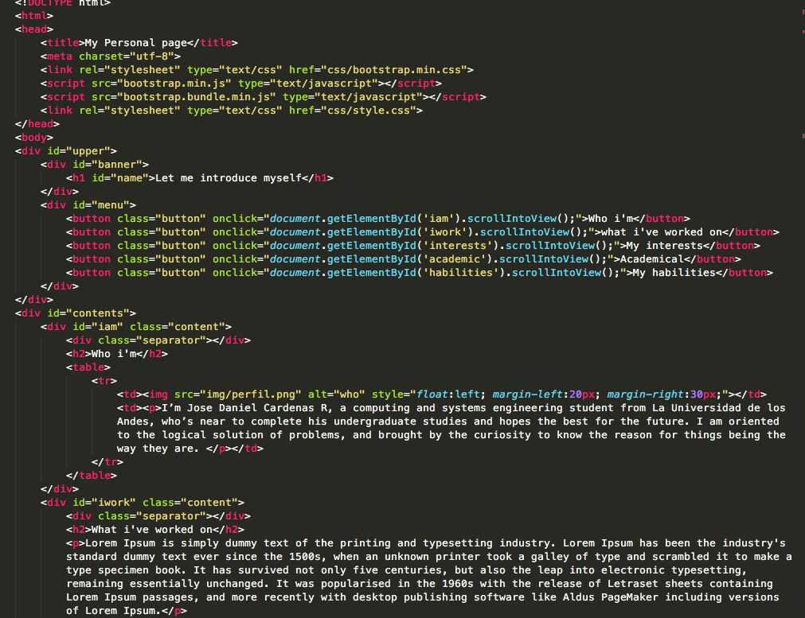

I’m Jose Daniel Cardenas R, a computing and systems engineering student from La Universidad de los Andes, who’s near to complete his undergraduate studies and hopes the best for the future. I am oriented to the logical solution of problems, and brought by the curiosity to know the reason for things being the way they are.
What i've worked on
I’ve worked in some projects during my time in the university. I’ve worked in a project for simulating a transactional System, With representations of the real world. The project is ‘PuertoAndes’, for the database subject.
I’ve worked in a project for SW team development subject, where we had to set a website for booking and offering vacation rooms.
In software architecture i worked in a project where we implemented an IOT solution for protecting houses with electronic remote controlled locks.
And’ve also worked in projects or experiments where We had to compares the throughput of many different software configurations.
My interests
I like history. I like to know the reason for many different events thought man’s walk on earth. I want to know if there is a reason or principle for things coming the way have come. And I also like the idea of finding relations that bring sense to what happened at certain times.
I also like Japanese Anime. I enjoyed titles like Evangelion, Naruto, and Attack on titan.
Something quirky I enjoy is 'El marcianito bailando cumbia'.
In informatics, i like the communications infrastructure for internet, and the way they are optimyzed and secured. I also like finding the best solution for a problem in informatics. It brings a sense of satisfaction.
I am also interested in solving problems that somehow come useful for the next person facing a similar problem to solve.
My academic formation
I studied High School in ‘Colegio Santo Tomas de Aquino’, which is managed by the dominican order. At that time, I did well in Math and physics and other related science topics. I participated in Colombian national Physics olympics in the years 2011 and 2012. I ended up as one finalist in both years. In 2012, I was in chemistry national olympics.
In University, I started studying Electronic engineering, but later changed my major, because I liked more the idea of writing working code and to materialize what i want to solve in a faster way.

My abilities
I am proficient at using Java. No one forgets the first language ever learned.
I know how to handle SQL sentences, without any fear of them.
I have expertice with some sort of things of web programming. I have some knowledge about Angular and Angular JS.
I have also some knowledge for Arduino programming for IOT, and other IOT tools like MQTT and NodeRed.
And, at overall, I have logical thinking fluency, and some extra knowledge about physics and math which can always come useful.